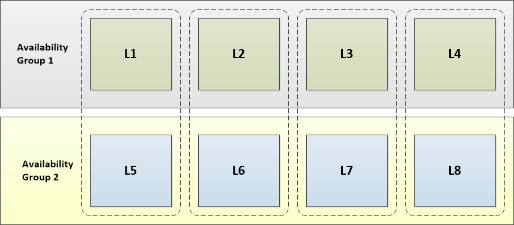

Upgrading MemSQL¶
This topic describes how to upgrade MemSQL from an earlier version. The upgrade process depends on the version from which you are upgrading. Note that there are specific instructions for Upgrading a Cluster. If you are upgrading an instance of MemSQL Single Box, you can skip directly to Upgrading a Node. If you are upgrading a license, you can skip directly to Upgrading a License.
Upgrading a Cluster¶
For a MemSQL cluster, the upgrade process involves individually upgrading each node in the cluster in a very specific sequence. There are two approaches:
- If the cluster is running at Redundancy Level 2, you have the option to perform an incremental cluster upgrade, in which you upgrade individual nodes while the cluster remains running.
- Otherwise, you must shut down the entire cluster, upgrade each node, and then start up the new version of MemSQL on each node in the cluster.
In addition, starting from version 4.0...
Deploying MemSQL Ops¶
Note
These instructions assume that the master aggregator will be MemSQL Ops primary agent.
- On the master aggregator, uninstall the old MemSQL Ops and collectd:
$ sudo service memsql-ops stop
$ sudo service collectd stop
$ sudo mv /var/lib/memsql-ops /var/lib/memsql-ops.bak
- Deploy MemSQL Ops to the master aggregator as the primary agent.
$ VERSION="0.0.25"
$ wget http://download.memsql.com/memsql-ops-$VERSION/memsql-ops-$VERSION.tar.gz
$ tar xzf memsql-ops-$VERSION.tar.gz
$ sudo memsql-ops-$VERSION/install.sh --no-cluster
Note: during the installation the current user will be added to the memsql group. Launch a new shell after the installation completes.
- Use the primary agent to deploy agents to rest of cluster, either via web UI or, in a new shell, via the command line interface:
$ cp ~/.ssh/id_rsa /var/lib/memsql-ops
$ chmod a+r /var/lib/memsql-ops/id_rsa
$ memsql-ops agent-deploy -h <HOST_IP> -u <USER> -i /var/lib/memsql-ops/id_rsa
Note: memsql user needs read access to the SSH credentials file. This file will be copied into /var/lib/memsql-ops/data/keys.
- Add your license key
$ memsql-ops license-add --license-key <license key>
Total Cluster Shutdown and Restart¶
Note
These instructions assume you have installed MemSQL using a Linux package manager. If you installed MemSQL from a binary, follow these steps but use the command syntax for a direct binary installation which can be found at Installing MemSQL on a Node.
Make sure that MemSQL Ops is deployed on all nodes in the cluster.
- Shut down the master aggregator.
$ sudo service memsql stop
- Shut down all child aggregator nodes.
- Shut down all leaf nodes.
- Upgrade all the nodes in the cluster according to the instructions in Upgrading a Node, in the followin order: leaves, then master aggregator, then child aggregator nodes.
- Verify that all leaves are online with SHOW LEAVES. If a leaf is detached then you can reattach it with ATTACH LEAF. If it is offline, then it is not reachable from the aggregator. See Managing High Availability for further details on leaf states.
Incremental Cluster Upgrade (Redundancy 2 Clusters Only)¶
For a cluster operating in Redundancy Level 2, you can upgrade individual nodes in the cluster while other nodes in the cluster are running. This setting is configured by doing either of the following:
- Set the redundancy_level system variable (redundancy_level = 2) (see Redundancy Level for details).
- In the memsql.cnf file of your master aggregator node, specify redundancy_level = 2 (see memsql.cnf Settings for details).
Note
Follow the upgrade sequence exactly as described in this section: leaf nodes first, then master aggregator, and finally all child aggregator nodes.
Step 1: Prepare for Upgrade¶
Make sure that MemSQL Ops is deployed on all nodes in the cluster.
On the master aggregator:
- Disable auto-attach
memsql> SET GLOBAL auto_attach = OFF;
- Disable leaf and aggregator failure detection
memsql> SET GLOBAL aggregator_failure_detection = OFF;
memsql> SET GLOBAL leaf_failure_detection = OFF;
Step 2: Upgrade Leaf Nodes¶
Note
For each pair, you can upgrade only one node in the pair at a time.
Begin by upgrading leaf nodes in the cluster. Determine in which order you want to upgrade the leaves - to avoid downtime, for each pair of leaves in the cluster you must update one host at a time (you can, however, upgrade all leaves in an availability group in parallel - refer to the example below).
For each availability group (1, 2), and for each leaf in the availability group:
- Run DETACH LEAF to detach the leaf from the cluster.
memsql> DETACH LEAF 'host':port;
- Upgrade MemSQL and migrate the data according to the instructions in Upgrading a Node.
- Run ATTACH LEAF to attach the leaf back to the cluster.
memsql> ATTACH LEAF 'host'[:port];
Note
It may take some time before the leaf recovered all partitions after upgrade and the leaf won’t be attached until fully recovered. To avoid downtime, all leaves in an availability group must be attached before proceeding with the upgrade of the next availability group.
The instructions in this section use a scenario shown in the following illustration.
In this scenario, there are two availability groups:
- leaves L1 - L4 are in Availability Group 1
- leaves L5 - L8 are in Availability Group 2
There are four pairs of leaf nodes:
- L1 and L5
- L2 and L6
- L3 and L7
- L4 and L8
To upgrade these leaf nodes:
- Detach leaf nodes L1, L2, L3, and L4.
- Upgrade and start leaf nodes L1, L2, L3, and L4 according to the instructions in Upgrading a Node.
- Attach leaf nodes L1, L2, L3, and L4.
- Detach leaf nodes L5, L6, L7, and L8.
- Upgrade and start leaf nodes L5, L6, L7, and L8. according to the instructions in Upgrading a Node.
- Attach leaf nodes L5, L6, L7, and L8 to the cluster.
Step 3: Upgrade the Master Aggregator Node¶
Note
When upgrading the master aggregator, do not run DDL operations and DML operations against reference tables as well as database-level and cluster-level operations. Furthermore, child aggregators will not see any of these operations take affect until after they are upgraded. In short, avoid altering tables while upgrading your aggregators.
On all child aggregators, pause replicating all databases by running:
memsql> PAUSE REPLICATING <db>;
for each database <db> (except memsql and information_schema), for each child aggregator.
You can run the following script from the MemSQL Ops primary agent:
#!/bin/bash for HOST in `memsql-ops agent-list --memsql-role aggregator -q` do echo "Connecting to host $HOST" memsql-ops agent-ssh --agent-ids $HOST --no-prompt ' for DB in `mysql -u root -h 127.0.0.1 --batch --skip-pager --skip-column-names --execute="SHOW DATABASES" | grep -vE "^(memsql|information_schema)$"` do echo " + Pausing replication for DB $DB" mysql -u root -h 127.0.0.1 --batch --execute "PAUSE REPLICATING \"$DB\"" done ' done
Upgrade the master aggregator node according to the instructions in Upgrading a Node.
Step 4: Upgrade Child Aggregator Nodes¶
Note
When upgrading a child aggregator, do not run queries against that host. Furthermore, child aggregators will not see any of these operations take affect until after they are upgraded. Basically, don’t try to alter table while upgrading your aggregators
Step 5: Re-enable Auto Cluster Operations¶
On the master aggregator:
- Enable auto-attach
memsql> SET GLOBAL auto_attach = ON;
- Enable leaf and aggregator failure detection
memsql> SET GLOBAL aggregator_failure_detection = ON;
memsql> SET GLOBAL leaf_failure_detection = ON;
Upgrading a Node¶
To upgrade a node:
Stop (and backup) the MemSQL instance that will be upgraded
$ sudo service memsql stopDeploy the new version of MemSQL via MemSQL Ops
$ memsql-ops memsql-deploy --role <leaf|master|aggregator>After this is finished a new MemSQL instance will be installed into the MemSQL Ops installs folder, default /var/lib/memsql-ops/data/installs
Stop the new MemSQL instance
$ memsql-ops memsql-stop [<memsql_id>]
Move data from the old MemSQL instance into the new MemSQL instance, preserving the newly assigned id
$ cd $(memsql-ops memsql-path) $ sudo mv ./data/memsql_id ./memsql_id $ sudo mv ./data ./data.bak $ sudo mv /var/lib/memsql/data ./ $ sudo mv ./memsql_id data/memsql_id
and if everything goes well
$ sudo rm -rf ./data.bakCopy the old config file
sudo cp /var/lib/memsql/memsql.cnf ./
Start the new MemSQL instance
$ memsql-ops memsql-start [<memsql_id>]
Verify that the node is running, then delete the old MemSQL binaries
$ ps aux | grep memsql $ sudo rm -rf /var/lib/memsql
Upgrading a License¶
If you need a new license, contact sales@memsql.com. If you would like to continue using the same MemSQL build with a new license, follow the steps in Replacing License Only. If you would like to replace both your build and license, follow the steps in Replacing Build and License.
Replacing License Only¶
- On each node in your cluster, replace the existing license in /var/lib/memsql/lib with your new license.
- On each node in your cluster, run:
$ sudo service memsql update-license <path to new license>
Replacing Build and License¶
Replace the existing build and license with the instructions from Upgrading MemSQL.